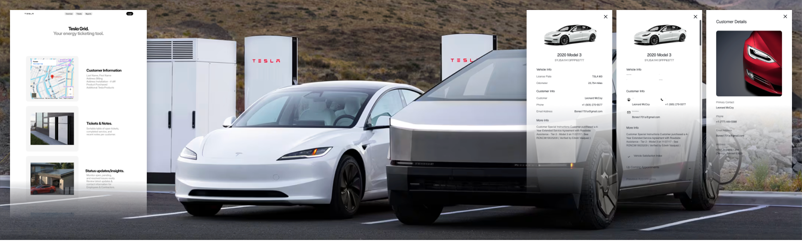
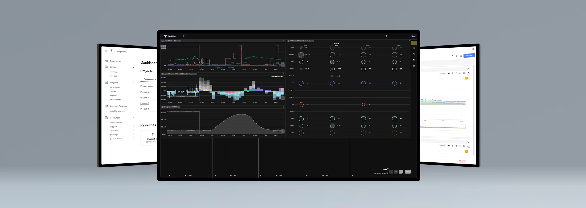
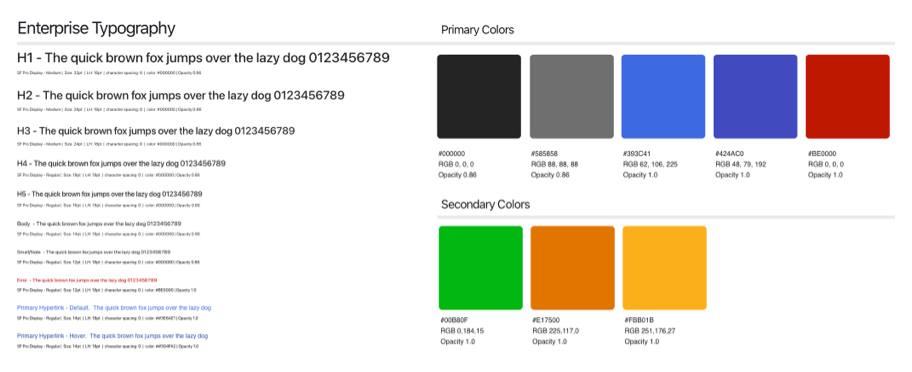
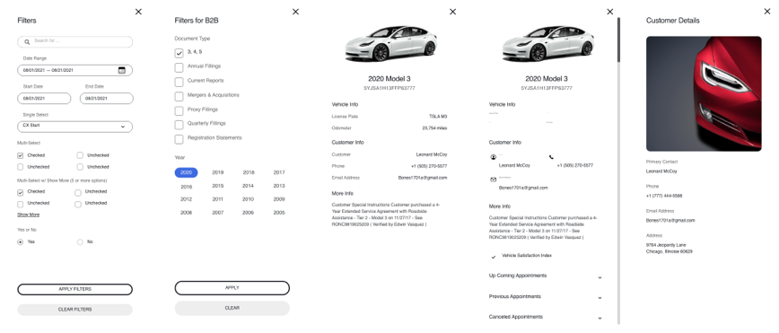

Case Study
Tesla Fleet & Energy
Improving operational clarity across Tesla’s Fleet and Energy applications while scaling an Enterprise Design System to 8+ teams.
My Role
Leading UX across two operational products and shared system foundations.

UX Design
- Led end-to-end UX across Fleet and Energy applications
- Developed the Tesla Enterprise Style Guide
- Conducted research and prototyping across roles and workflows
- Partnered with Engineering, Product, and field teams on real-time operational tools
Credits / Team: Product Design, Frontend Engineering, UX Research, Ops PMs
Tools: Sketch, XD, React component library
Background
Designing for real-time operations across complex hardware.

Fleet and Energy teams needed fast, reliable tools for real-time status, service needs, usage patterns, and alerts.
The goal was to improve both products while creating shared interaction patterns, component standards, and governance that reduced cognitive load and supported scale.
Problem
Fragmentation was slowing operations and delivery.
- Inconsistent patterns created confusion and slowed onboarding
- Duplicate engineering effort wasted time
- Missing guidelines created handoff friction
- Operational data did not always support fast action
The issue was cohesion: independently evolved tools created gaps in patterns, workflows, and behavior.
Discovery
Understanding real Fleet and Energy workflows.

I partnered with Product, Engineering, and Operations to audit workflows and understand fleet uptime and energy-site management.
- Interviewed and observed internal users
- Mapped monitoring, diagnostics, and response journeys
- Identified redundant patterns, unclear hierarchy, and workflow friction
- Reviewed friction between tools, teams, and systems
The key challenge was making complex operational data usable in real time across two distinct products.
Strategy
Improving two products through shared foundations.
Shared patterns, interaction principles, and design-system rules supported both products without erasing their distinct workflows.
- Improve each product without merging them
- Reduce inconsistencies through a shared design system
- Surface the right signals for faster action
- Standardize patterns for faster onboarding and delivery
Solution
Moving operations from signal to diagnosis to response.
The experience reduced friction from signal to action while creating a more consistent UX foundation.
- Surfaced critical operational signals in Fleet and Energy
- Created map views, data rollups, alert hierarchy, and diagnostics
- Prototyped responsive desktop and tablet workflows
- Clarified critical, warning, and informational states
Design System
Building the Tesla Enterprise Style Guide.


I created the Tesla Enterprise Design System to unify patterns, reduce duplicate effort, and establish a reusable foundation across internal tools.
- Standardized layouts, components, and interaction patterns
- Defined alert hierarchy and operational-state rules
- Created guidance for data visualization, dashboards, and responsive workflows
- Improved delivery through shared patterns and clearer handoff
The system improved consistency across both applications and supported broader organizational scale.
Impact
Improving operational clarity and delivery at scale.
- Improved real-time monitoring, diagnostics, alerts, service, and response
- Reduced cognitive load through clearer hierarchy and exception handling
- Enterprise Design System adopted by 8+ software teams
- Established scalable component standards, governance and documentation, and WCAG-aligned accessibility